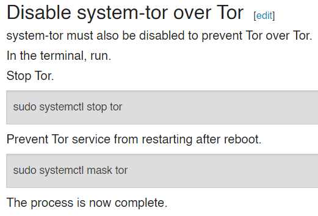

Hello,
I’m using Whonix CLI and Workstation 15.0.1.7.3, and it is clear that the usage of system-tor over Tor could be risky.
If I would like to use another operating system as workstation, the Whonix Wiki at Other Operating Systems - Whonix says:

On Whonix Workstation, if I type in the terminal
sudo systemctl status tor
why I get:

Should I not get the “Inactive” message for Tor Service in the Whonix Workstation?
Thank you in advance.